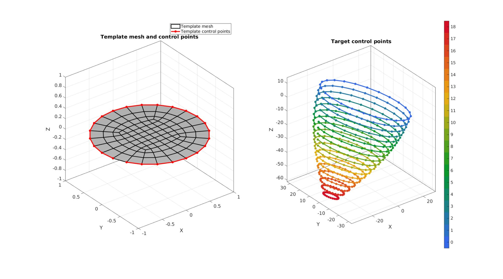
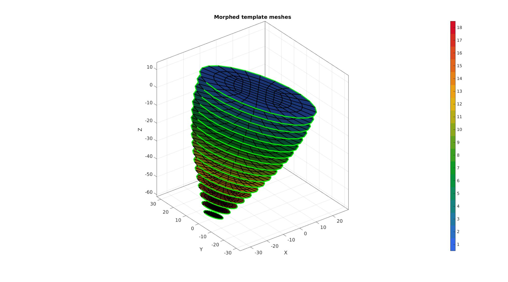
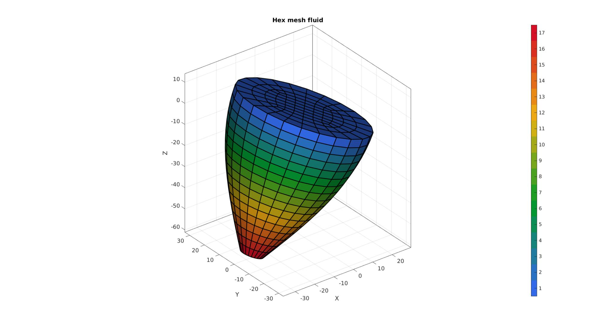
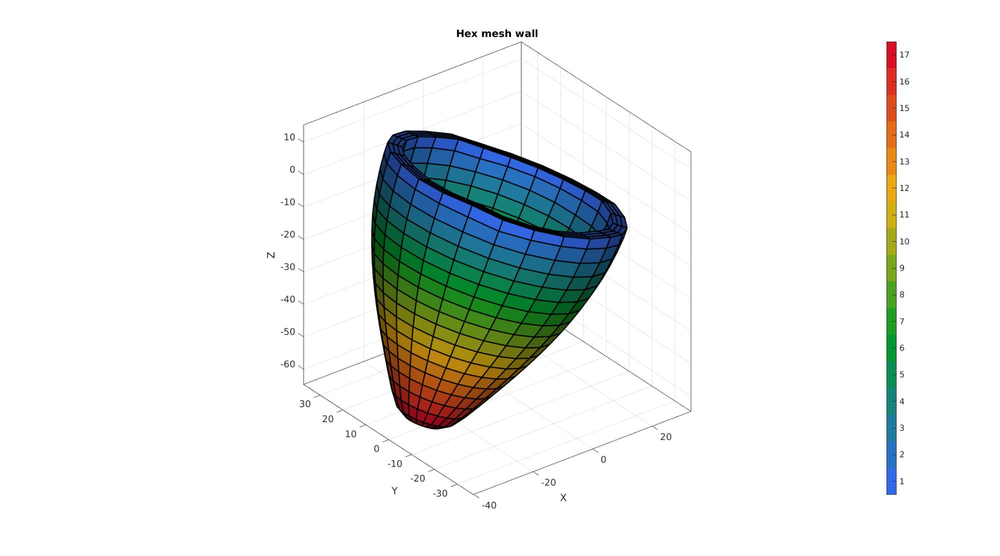
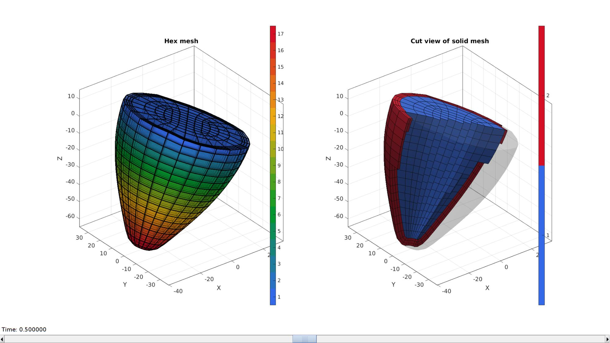

DEMO_heart_contours_hex_mesh_warping_01.m
Below is a demonstration for:
- Building a hexahedral mesh for a heart shape based on morphing of a template
- A template quad mesh is warped to match the shape of several curves
- The quads are next joined as hexahedral elements for the interior (fluid) domain
- The outer faces are next thickened to create a cardiac wall
Contents
- Keywords
- Plot settings
- Control parameters
- Building a quadrilateral circular template mesh
- Define target control points
- Visualize template mesh and control points
- Morph template quad mesh
- Build hexahedral elements of interior
- Bound wall mesh from by offsetting interior
- Join and merge wall and interior mesh
- Visualize final mesh
Keywords
- Warping
- hexahedral meshing
- heart, cardiac
- Cylindrical, circular
clear; close all; clc;
Plot settings
fontSize=15; edgeWidth=2;
Control parameters
% discQuadMesh parameters ne=6; %Elements in radius f=0.5; %Fraction (with respect to outer radius) where central square appears %Control point parameters numLayers=18; %Number of control curve layers heartHeight=65; %Interpolation settings for warping interpMethod='linear'; extrapMethod='linear'; %Thickening settings layerThickness=4; %Wall thickness numSteps=3; %Number of elements across wall
Building a quadrilateral circular template mesh
%Create the mesh
[F_template,V_template]=discQuadMesh(ne,1,f);
V_template(:,3)=0;
F_template=fliplr(F_template);
Eb=patchBoundary(F_template);
indB=edgeListToCurve(Eb);
indB=indB(1:end-1);
Smoothen mesh
cPar.n=50; cPar.Method='LAP'; cPar.RigidConstraints=indB; %Hold on to boundary [V_template]=patchSmooth(F_template,V_template,[],cPar); %Define control points on template mesh V_control_template=V_template(indB,:);
Define target control points
A cell containing a set of control curves is here created. The example features a tilted set of ellipse curves that vary in size.
ta=linspace(0,pi/2,numLayers); a=30+25*(cos(ta)-1); %Radii in first ellipse direction b=a.*1.2; %Radii in second ellipse direction p=linspace(0,-heartHeight,numLayers); %Layer offset direction (e.g. Z-coordinate) Q=euler2DCM([0.1*pi -0.1*pi 0.25*pi]); %Rotation V_control_target=cell(1,numLayers); for q=1:1:numLayers t = atan2(V_control_template(:,2),V_control_template(:,1)); %Angle V_control_target_layer=[a(q)*cos(t) b(q)*sin(t) p(q)*ones(size(t))]; V_control_target_layer=V_control_target_layer*Q; V_control_target{q}=V_control_target_layer; end
Visualize template mesh and control points
cFigure; subplot(1,2,1); hold on; title('Template mesh and control points'); hp1=gpatch(F_template,V_template,'w','k',1,edgeWidth); hp2=plotV(V_control_template,'r.-','LineWidth',3,'MarkerSize',25); legend([hp1 hp2],{'Template mesh','Template control points'}); axisGeom(gca,fontSize); camlight headlight; subplot(1,2,2); hold on; title('Target control points'); Cp=gjet(numLayers); %Colors for curves for q=1:1:numLayers hp=plotV(V_control_target{q},'k.-','LineWidth',3,'MarkerSize',25); hp.Color=Cp(q,:); end axisGeom(gca,fontSize); camlight headlight; colormap(Cp); caxis([0 numLayers]); icolorbar; drawnow;
Morph template quad mesh
FT=cell(1,numLayers); %Initialize face cell VT=cell(1,numLayers); %Initialize vertex cell for q=1:1:numLayers %Loop over layers and process morphing individually %Simply copy face description from template FT{q}=F_template; %Morph vertices VT{q}=interpMorph(V_template,V_control_template,V_control_target{q},interpMethod,extrapMethod); end %Join face sets (converts cells to normal arrays) [FT,VT,CT]=joinElementSets(FT,VT);
Visualizing morphed face sets
cFigure; hold on; title('Morphed template meshes'); gpatch(FT,VT,CT,'k',1,edgeWidth); for q=1:1:numLayers plotV(V_control_target{q},'g-','LineWidth',3,'MarkerSize',25); end axisGeom(gca,fontSize); camlight headlight; colormap gjet; icolorbar; drawnow;
Build hexahedral elements of interior
Loop over face layers and use faces as tops/bottoms of volumetric elements.
E1=[]; C1=[]; for q=1:1:numLayers-1 e=[FT(CT==q,:) FT(CT==q+1,:)]; E1=[E1; e]; C1=[C1; q*ones(size(e,1),1)]; end [F1,CF1]=element2patch(E1,C1); V1=VT;
Visualize interior mesh
cFigure; hold on; title('Hex mesh fluid'); gpatch(F1,V1,CF1,'k',1,edgeWidth); % patchNormPlot(F1,V1); axisGeom(gca,fontSize); camlight headlight; colormap gjet; icolorbar; drawnow;
Bound wall mesh from by offsetting interior
Get boundary faces
indBoundaryFaces=tesBoundary(F1); Fb1=F1(indBoundaryFaces,:); Cb1=CF1(indBoundaryFaces,:); Cb1_V=faceToVertexMeasure(Fb1,V1,Cb1); logicSides=~all(Cb1_V(Fb1)==1,2); Fb1_sides=Fb1(logicSides,:); Cb1_sides=Cb1(logicSides,:);
Smooth outer mesh
indSmooth=unique(Fb1_sides(:));
[Ft,Vt]=patchCleanUnused(Fb1_sides,V1);
cPar.n=25;
cPar.Method='HC';
cPar.RigidConstraints=indB;
[Vt]=patchSmooth(Ft,Vt,[],cPar);
V1(Fb1_sides(:),:)=Vt(Ft(:),:);
Thicken mesh to form layer
[Ft,Vt]=patchCleanUnused(Fb1_sides,V1); [E2,V2,F2_1,F2_2]=patchThick(Ft,Vt,1,layerThickness,numSteps); C2=repmat(Cb1_sides,[numSteps,1]); [F2,CF2]=element2patch(E2,C2);
Visualize wall mesh
cFigure; hold on; title('Hex mesh wall'); % gpatch(Fb1_sides,V1,'kw','k',1,edgeWidth); gpatch(F2,V2,CF2,'k',1,edgeWidth); % patchNormPlot(F1,V1); axisGeom(gca,fontSize); camlight headlight; colormap gjet; icolorbar; drawnow;
Join and merge wall and interior mesh
E=[E1;E2+size(V1,1)]; %Join element sets M=[ones(size(E1,1),1); 2*ones(size(E2,1),1)]; %Create material labels for wall/interior V=[V1;V2]; %Join node sets C=[C1;C2]; %Join element color data [F,CF]=element2patch(E,C); [~,MF]=element2patch(E,M); %Merge mesh based on faces [F,V,ind1,ind2]=mergeVertices(F,V); %Correct indices after merge E=ind2(E);
Visualize final mesh
% Create mesh structure to aid visualization
meshStruct.elements=E;
meshStruct.nodes=V;
meshStruct.faces=F;
meshStruct.elementMaterialID=M;
hFig=cFigure; subplot(1,2,1); hold on; title('Hex mesh'); gpatch(F,V,CF,'k',0.5,edgeWidth); axisGeom(gca,fontSize); camlight headlight; colormap gjet; icolorbar; hs=subplot(1,2,2); hold on; title('Cut view of solid mesh','FontSize',fontSize); optionStruct.hFig=[hFig hs]; meshView(meshStruct,optionStruct); axisGeom(gca,fontSize); drawnow;
function [V_target]=interpMorph(V_template,V_control_template,V_control_target,interpMethod,extrapMethod) U_control=V_control_target-V_control_template; interpFunction_Ux=scatteredInterpolant(V_control_template(:,[1 2]),U_control(:,1),interpMethod,extrapMethod); interpFunction_Uy=scatteredInterpolant(V_control_template(:,[1 2]),U_control(:,2),interpMethod,extrapMethod); interpFunction_Uz=scatteredInterpolant(V_control_template(:,[1 2]),U_control(:,3),interpMethod,extrapMethod); Ux_template=interpFunction_Ux(V_template(:,[1 2])); %X-displacement interpolated Uy_template=interpFunction_Uy(V_template(:,[1 2])); %Y-displacement interpolated Uz_template=interpFunction_Uz(V_template(:,[1 2])); %Z-displacement interpolated V_target=V_template+[Ux_template Uy_template Uz_template]; end
GIBBON footer text
License: https://github.com/gibbonCode/GIBBON/blob/master/LICENSE
GIBBON: The Geometry and Image-based Bioengineering add-On. A toolbox for image segmentation, image-based modeling, meshing, and finite element analysis.
Copyright (C) 2006-2022 Kevin Mattheus Moerman and the GIBBON contributors
This program is free software: you can redistribute it and/or modify it under the terms of the GNU General Public License as published by the Free Software Foundation, either version 3 of the License, or (at your option) any later version.
This program is distributed in the hope that it will be useful, but WITHOUT ANY WARRANTY; without even the implied warranty of MERCHANTABILITY or FITNESS FOR A PARTICULAR PURPOSE. See the GNU General Public License for more details.
You should have received a copy of the GNU General Public License along with this program. If not, see http://www.gnu.org/licenses/.